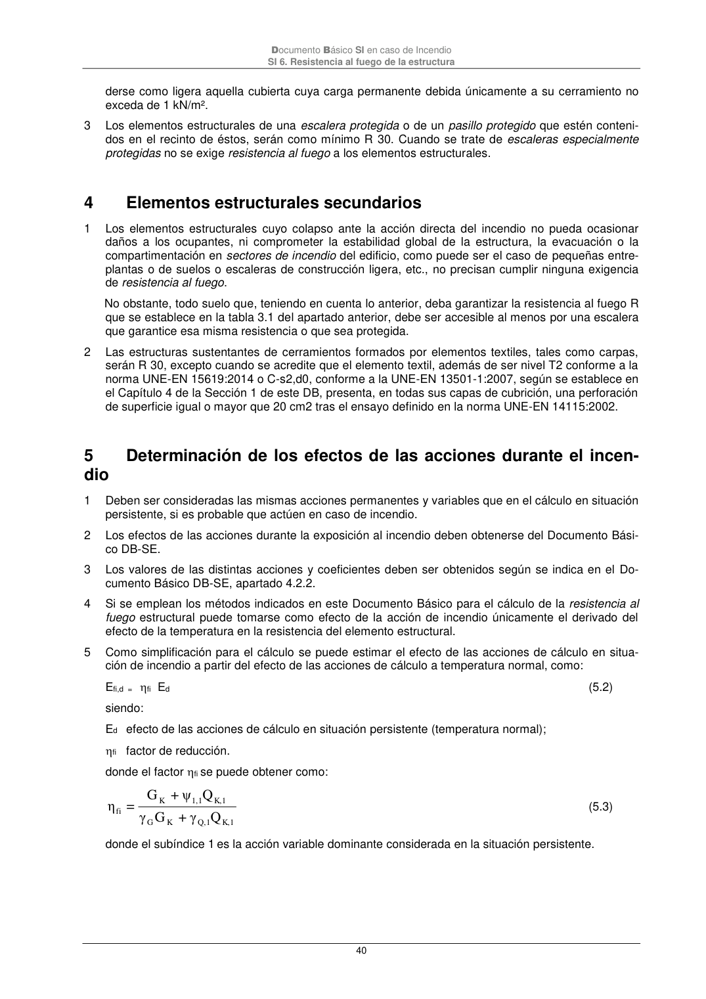

DB-SI Seguridad en caso de incendio · edición 2025-03-04 · capa oficial
Documento DB-SI-oficial · SHA-256 del PDF 0a2e78cd62471d9cc5cfe2efbc6aa39fdbad73c124aea7b039f9de96c141e105
Copia fiel del PDF fuente · Fuente oficial
Ficha de la disposición en la fuente oficial
Formatos: JSON del segmento · Markdown
Determinación de los efectos de las acciones durante el incen- dio dio 1 Deben ser consideradas las mismas acciones permanentes y variables que en el cálculo en situación persistente, si es probable que actúen en caso de incendio. 2 Los efectos de las acciones durante la exposición al incendio deben obtenerse del Documento Bási- co DB-SE. 3 Los valores de las distintas acciones y coeficientes deben ser obtenidos según se indica en el Do- cumento Básico DB-SE, apartado 4.2.2. 4 Si se emplean los métodos indicados en este Documento Básico para el cálculo de la resistencia al fuego estructural puede tomarse como efecto de la acción de incendio únicamente el derivado del efecto de la temperatura en la resistencia del elemento estructural. 5 Como simplificación para el cálculo se puede estimar el efecto de las acciones de cálculo en situa- ción de incendio a partir del efecto de las acciones de cálculo a temperatura normal, como: Efi,d = fi Ed (5.2) siendo: Ed efecto de las acciones de cálculo en situación persistente (temperatura normal); fi factor de reducción. donde el factor fi se puede obtener como: K,1 Q,1 K G K,1 1,1 K fi Q γ + G γ Q ψ + G = η (5.3) donde el subíndice 1es la acción variable dominanteconsiderada en la situación persistente. Documento Básico SI en caso de Incendio SI 6. Resistencia al fuego de la estructura 41 6
